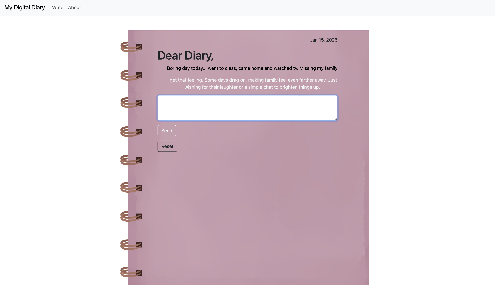
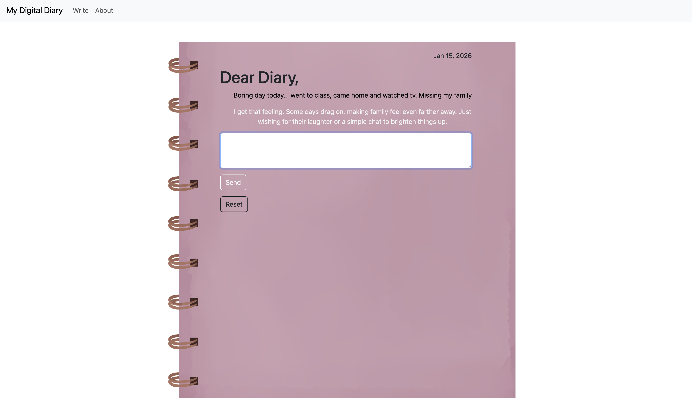

MY DIGITAL DIARY
Try it!Python, Flask, HTML, CSS, OpenAI API
An interactive diary, built as a multi-page website. The project acts as a kind of “digital diary,” where the user writes entries and the diary responds through the OpenAI API. I created the site from scratch, connected it to the API, and designed the background and layout, with the intention of making AI interactions feel more personal than automated.
 
